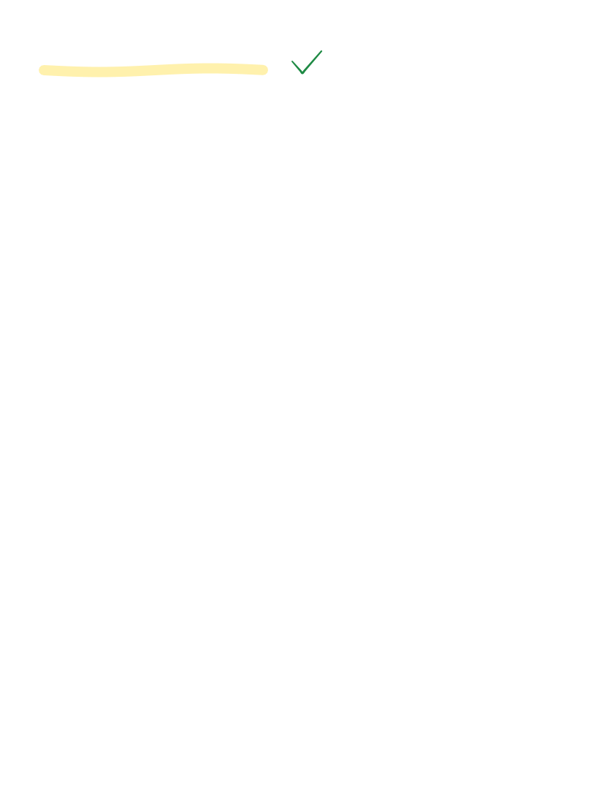

Dosya yöneticinizden bir dosyayı bu sayfaya sürükleyin. NoteCraft ne yapılacağını sorar:
assets klasörüne konur ve sayfa onu gösterir.Ekle, sonra Resim ya da Dosya aynısını yapar ve dosyayı bırakmanızı söyler.
resimler-ve-dosyalar/
index.md
assets/
diagram.png
butce.xlsx
Resim sayfayla birlikte gider: klasörü taşırsanız resim de onunla taşınır. Adlar her işletim sistemi için güvenli hale getirilir, iki dosya aynı adı paylaşmaz ve 512 MB'tan büyük bir dosya kabul edilmez.
Başka bir not uygulamasından ya da bir elektronik tablodan kopyalanan bir tablo, tablo olarak yapıştırılır. Bir resmi yapıştırmak için sayfada bir yere tıklayıp Ctrl+V'ye basın. NoteCraft sayfanın assets klasörüne bir kopya kaydeder ve notun içine ekler.
Bazı uygulamalar bir PDF ya da belgeyi sayfanızda resim olarak gösterebilir. NoteCraft bunu henüz yapamaz; eklediğiniz bir PDF dosya olarak tutulur ve iletişim kutusu bunu söyler.
Sonraki: İki sayfa biçimi.
Bu sayfa bir yapay zekâ modeli tarafından çevrildi. Düzeltmeler memnuniyetle karşılanır.
